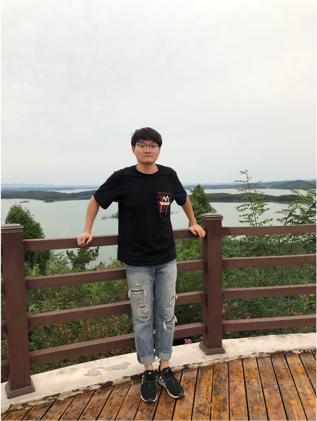

周永峰
Yongfeng Zhou, Professor from the Agricultural Genomics Institute at Shenzhen (AGIS) of the Chinese Academy of Agricultural Sciences (CAAS). Before joining AGIS, he did a Ph.D. in University of Oulu and a postdoc in University of California, Irvine, under the supervision of Prof. Outi Savolainen and Prof. Brandon Gaut, respectively. The Zhou lab studies the population genetics of crop domestication and genomic breeding, mining adaptive, deleterious, structural variants, regulatory networks and phenotype/environment-genotype associations in OMICS data of crops and their wild relatives to practice breeding 4.0 of grapevine and other horticultural crops.
王怡雯
Yiwen Wang is a postdoc from the AGIS in Prof.
Yongfeng Zhou’s lab. Before joining AGIS, she did a PhD in biostatistics and microbial genomics at the University of Melbourne and completed her master’s degree in bioinformatics from the University of Queensland.
Her research interests focus on the studies of transposable elements (TEs) in the grapevine.
More specially, she works on the development of methods with high precision to detect TEs and design genetic markers to improve breeding based on TEs for the grapevine.
In addition, her interests also involve the integration of multi-omics data and establishing the regulatory networks in the grapevine.
徐晓东
Xiaodong Xu joined the lab in 2021 as Postdoc, working on Population Genomics and Breeding of Vitis L. He earned Ph.D. in Central China Normal University, where he studied Plant Taxonomy.

刘众杰
Zhongjie Liu. I am a post doctor in Agricultural Genomics Institute at Shenzhen (AGIS) of the Chinese Academy of Agricultural Sciences (CAAS). I graduated from Nanjing agriculture university (NJAU) and interested in the grape organ morphogenesis and phenomics in especial fruit and leaf. Now, I am shift some attention to study the molecular population genetics and expected to explain the evolution of muscut in grape.
陈梦霞
Mengxia Chen is a doctoral candidate and a newcomer to Agricultural Genomics Institute at Shenzhen (AGIS) of the Chinese Academy of Agricultural Sciences (CAAS). She graduated from Nanjing Agricultural University with a master's degree. Her previous work focused on the regulation mechanism of grape copper stress.
龙颀明
Qiming Long, research assistant of Prof. Yongfeng Zhou’s lab in Agricultural Genomics Institute at Shenzhen (AGIS) , got his bachelor's degree and Master's degree from Lanzhou university. Before joining AGIS, he focused on the research of functional genomics, and now he focusing on the study of population genetics. During spare time, playing badminton, swimming and hiking are his favourite activities.

苏颖
Ying Su joined the lab as a research assistant in 2020, after earning her master degree in Agriculture from Nanjing Agricultural University. Ying Su is primarily interested in the population genetics of crop domestication, experimental evolution, and deleterious, structural variants.
王旭
Xu Wang is a Pomology graduate student working on grape and fig genomics and population genetics and aims to use the method of big data analysis locks in the key genes of economic traits for better fruit quality.
史小丫
Xiaoya Shi is a postgraduate student of Qingdao Agricultural University and Institute of Agricultural Genomics, Chinese Academy of Agricultural Sciences, majoring in agronomy and seed industry. Graduated from Jilin Agricultural University.
李佳蕾
Jialei Li, graduated from Xinjiang University, majoring in biotechnology. Work on botany, bioinformatics and population genetics. Her research interests focus on the studies of transposable element (TE) and somatic variations in the cultivated apple.
张天浩
Tianhao Zhang, a graduate student from Guangxi University, majoring in Plant Physiological Ecology. Now studying in the Agricultural Genomics Institute at Shenzhen(AGIS).
王月
Yue Wang, graduated from Southwest University, majoring in agronomy and seed industry. Good at Computer Aided Design and Adobe Photoshop.
钟海霞
Haixia Zhong, associate professor from the Institute of Horticulture Crops, Xinjiang Academy of Agricultural Sciences (XAAS).Associate researcher. PhD. Master Instructor. Research direction is grapevine quality improvement and breeding. She is committed to the mechanism of root-sprocket interaction, study on the control of rootstocks on fruit quality of grape scion varieties, research on excavation, domestication, migration, development and utilization of excellent genes in ancient local grapes in Xinjiang, and research on grapevine genome design and breeding.

王楠
Nan Wang. I am a visitor PHD students and is studying in Agricultural Genomics Institute at Shenzhen (AGIS) of the Chinese Academy of Agricultural Sciences (CAAS). I come from Huazhong agriculture university (HZAU) and focus on the conflict of plant mating system in citrus, i.e., sexual vs apomixis. Besides, I am interested in the plant evolution features, such as structure variations and local adaptation. By the way, I admire Anna Koltunow (Queensland of University), who is the famous scientists in apomixis.
李超超
ChaoChao Li Visiting PhD student. Studying at Huazhong Agricultural University, the main research topic is citrus male sterility and organelle genome evolution.